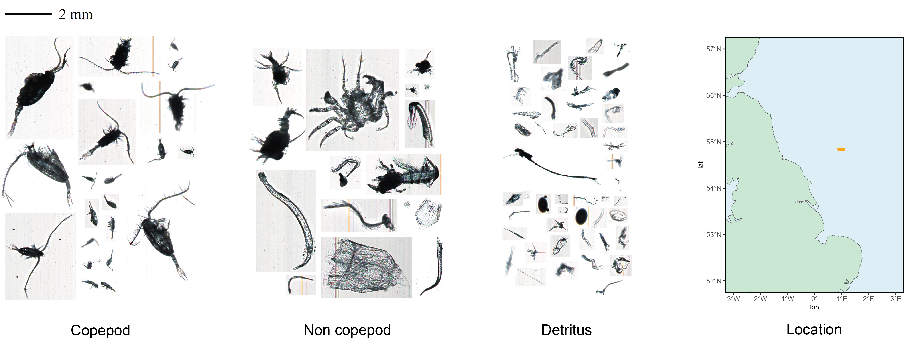
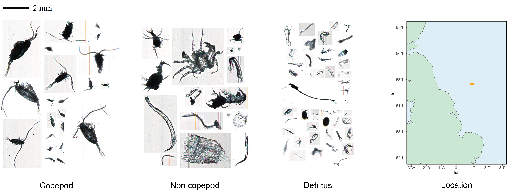
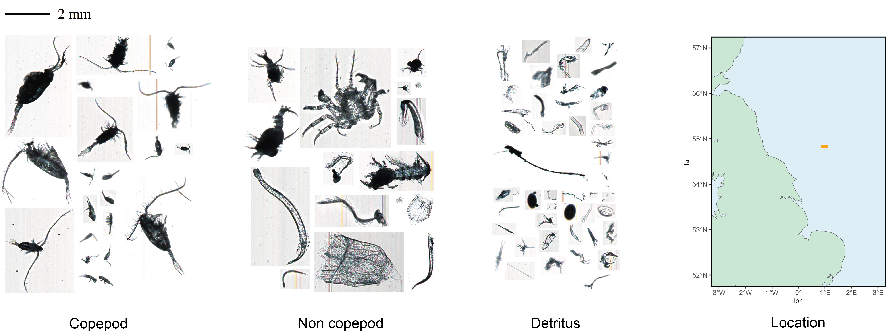

Gallery
Explore some examples of our work:
 

Plankton serves as a critical indicator of aquatic ecosystem health due to its sensitivity to environmental changes and short life cycles. The integration of AI technologies and high-speed imaging instruments presents an exciting opportunity to enhance the accuracy and efficiency of plankton monitoring. In this project, we are utilizing data from the Plankton Imaging (Pi-10) instrument deployed on the RV Cefas Endeavour to develop a near real-time monitoring application using state-of-the-art AI techniques.
Building on the work of the Turing Data Study Group (DSG), we aim to enhance the DSG classifier for the real-time access to plankton imager data (RAPID) toolset, which is designed for the Plankton Analytics Pi-10 instrument. The first version of the RAPID Plankton software was operational within six months and deployed on the RV Cefas Endeavour. This open-source software can be adapted to classify images of various marine species and objects, revolutionizing the study of marine ecosystems. Further developments include the deployment of a real-time dashboard to provide continuous plankton metrics. Additionally, we are implementing explainable AI (xAI) methods to enhance collaboration with ecologists, making AI models more transparent and interpretable.
As part of this effort, we are also introducing ViT-LASNet, a comprehensive framework designed to improve the classification of plankton images from the Pi-10 dataset, particularly for real-time applications. ViT-LASNet integrates advanced image classification architectures such as Vision Transformers (ViT) and BEiT, combined with a novel dynamic Label-Aware Smoothing (LAS) strategy. This approach aims to significantly enhance plankton classification accuracy and support the broader goal of real-time ecological monitoring.
Explore some examples of our work:
